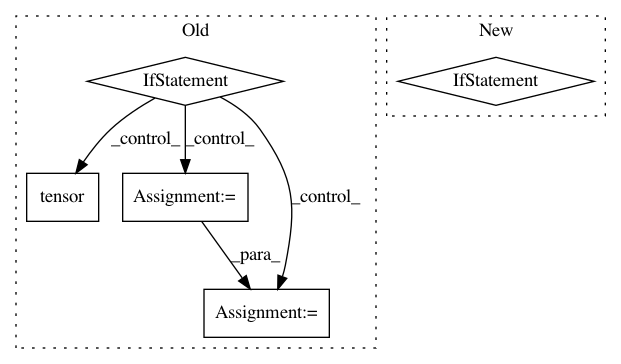

87a61ad92a9e0129e5c81c242f0ea96d77e6b0af,allennlp/training/metrics/pearson_correlation.py,PearsonCorrelation,get_metric,#PearsonCorrelation#Any#,71
Before Change
predictions_variance = self._predictions_variance.get_metric(reset=reset)
labels_variance = self._labels_variance.get_metric(reset=reset)
denominator = math.sqrt(predictions_variance) * math.sqrt(labels_variance)
if is_distributed():
// Note: this gives an approximate aggregation of the covariance.
device = self._device
_covariance = torch.tensor(covariance).to(device)
dist.all_reduce(_covariance, op=dist.ReduceOp.SUM)
covariance = _covariance.item()
_denominator = torch.tensor(denominator).to(device)
dist.all_reduce(_denominator, op=dist.ReduceOp.SUM)
denominator = _denominator.item()
if reset:
self.reset()
if np.around(denominator, decimals=5) == 0:
After Change
The accumulated sample Pearson correlation.
if is_distributed():
raise RuntimeError(
"Distributed aggregation for PearsonCorrelation is currently not supported."
)
covariance = self._predictions_labels_covariance.get_metric(reset=reset)
predictions_variance = self._predictions_variance.get_metric(reset=reset)
labels_variance = self._labels_variance.get_metric(reset=reset)
denominator = math.sqrt(predictions_variance) * math.sqrt(labels_variance)
In pattern: SUPERPATTERN
Frequency: 3
Non-data size: 5
Instances
Project Name: allenai/allennlp
Commit Name: 87a61ad92a9e0129e5c81c242f0ea96d77e6b0af
Time: 2020-08-19
Author: akshita23bhagia@gmail.com
File Name: allennlp/training/metrics/pearson_correlation.py
Class Name: PearsonCorrelation
Method Name: get_metric
Project Name: ray-project/ray
Commit Name: ebeee1d59a3e3365a455987bf517ad0d8eac35d5
Time: 2021-02-08
Author: cc.ash.math@gmail.com
File Name: rllib/agents/maml/maml_torch_policy.py
Class Name:
Method Name: maml_loss
Project Name: OpenMined/PySyft
Commit Name: 5efaf25f5499c7065f1c37bfd4288159714406d8
Time: 2020-08-12
Author: vova@promail.spb.ru
File Name: src/syft/lib/torch/uppercase_tensor.py
Class Name: TorchTensorWrapper
Method Name: _data_proto2object